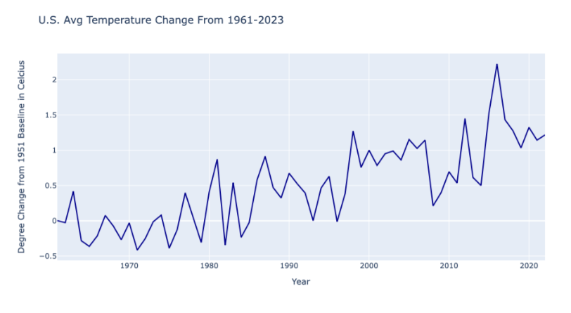

Climate Change
These greenhouse gas emissions persist in the earth’s atmosphere, relentlessly fueling the ongoing warming of our planet. As outlined in the background chapter, both methane and nitrous oxide have powerful warming effects, that last for years, causing severe and irreversible damage to the earth as they contribute to environmental disruption. Their sustained presence in the atmosphere contributes significantly to global warming.
To observe the effects that coal fired power plants have on the environment, specifically global warming, we utilized data from the global monitoring laboratory of the National Oceanic and Atmospheric Administration (NOAA) to analyze the global atmospheric concentrations of methane and nitrous oxide over time. The analysis shows that from 2000-2022, there has been a consistent upward trend in the concentration of both methane and nitrous oxide.
These upward trajectories highlight the undeniable impact of human activities, particularly the operations of coal-fired power plants, on our environment. This is important to note, because even as emissions from coal-fired power plants begin to decline, the concentrations of these gases persist and continue to increase, due to the long lifespan and powerful warming effects they have in our atmosphere. According to the EPA, “Historical measurements show that the current global atmospheric concentrations of CH4 and N2O are unprecedented compared with the past 800,000 years,” (EPA, 2023)
The combustion of fossil fuels, particularly coal, releases substantial amounts of methane and nitrous oxide into the atmosphere, perpetuating a cycle of environmental degradation. The repercussions extend beyond the immediate vicinity of these power plants, with the intense consequences felt globally as these gases intermingle and linger in the atmosphere. The extreme amounts of harmful emissions from coal plants greatly contribute to the greenhouse effect's intensification.
As methane and nitrous oxide, emanating largely from coal-fired power plants, intensify the greenhouse effect, the repercussions are vividly reflected in the upward trajectory of temperature records. Utilizing data from the IMF (collected by the FAO), we analyzed the average temperature change over time in the United States, as seen in figure 25. These temperature records indicate a pattern of warming that transcends natural climatic variation.
Although the relationship in the plot shows a nonlinear trend, we can utilize data from the past century, to zoom out and see how the temperature change has increased over the past 60 years, before coal-fired power plants were widely used in the US, we see there is a significant overall trend upwards in the average temperature. This broader trend in temperature is evident in figure 26.
Based on the White House's comprehensive long-term net-zero strategy unveiled in 2021, it is imperative that the United States achieves carbon neutrality by 2050 to avert a further 1.5-degree Celsius, or a 34.7 degree Fahrenheit, rise in Earth's surface temperature (The White House, 2021). Such an escalation would precipitate irreversible alterations to our planet's balance. This underscores the pressing need for all institutions and universities to intensify their sustainability endeavors, ultimately aiming for carbon neutrality. The persistent shifts in our climate, despite appearing gradual, will significantly affect our planet, posing multifaceted challenges to our society and ecosystems. These challenges threaten our security, well-being, and ultimately, our very existence.
Impacts
Besides the seemingly slight increase in temperature, climate change also causes a variety of extreme weather conditions and storms like flooding, hurricanes, drought, heatwaves, and wildfires (United Nations, n.d.) These dangerous conditions will continue to impact the environment in a magnitude of ways. From altering ecosystems and landscapes to disrupting vital natural processes, the ramifications of these extreme conditions reverberate throughout the interconnected web of Earth's systems, leaving a profound mark on both the natural world and human societies alike.
Agriculture stands as a major impact of the intricate relationship between weather patterns and climate dynamics. The reliance of agriculture on land and water exposes it to the multifaceted impacts of climate change. The shifting climate conditions disrupt traditional growing seasons, introducing uncertainties that challenge the stability of crop production. The increased frequency and intensity of wildfires further compound these challenges, posing a direct threat to farmlands (USGS, n.d.). Greenhouse gas emissions contribute to a dual impact on agriculture. Beyond the indirect effects of climate change, air pollution from these emissions can directly harm crops, plants, and forests. The intricate balance of ecosystems that sustain agriculture becomes increasingly vulnerable to disruptions, affecting the quality and quantity of essential food crops (EPA, 2023).
The repercussions of climate change extend beyond the fields, reaching into water resources vital for agricultural sustenance. Heavy precipitation, intensified by climate change, poses a threat to water quality. The runoff from these extreme weather events depletes soil nutrients, exacerbates agricultural runoff, and contributes to oxygen depletion in bodies of water. The result is a perilous situation for aquatic life, including fish and shellfish species that depend on balanced ecosystems for survival (EPA, 2023).
Ecosystems also bear the brunt of climate change. Some species struggle to adapt to the rapidly changing conditions, leading to unprecedented expansions, reductions, and even extinctions. The delicate web of life unravels as key species face existential challenges. The increased frequency and intensity of natural disturbances, such as storms and wildfires, add to the complexity. These disturbances not only threaten the stability of ecosystems but also jeopardize carbon storage, with potential cascading impacts on climate dynamics and water sources (EPA, 2023).
These worsening conditions exacerbate factors driving poverty and displacement, as highlighted by the UN. Weather-related crises have led to more displacement than violence and conflict combined over the past decade. (UN, 2022) Such challenges exacerbate societal issues like poverty, hunger, and unequal access to natural resources. Extreme weather events caused by climate change tend to hit those least equipped to recover and adapt. (UN, 2022)
Studies are showing that poor and disadvantaged communities, particularly people of color, are exposed to higher levels of environmental pollution than other sectors of society (Truax, Bullard, & Club Books, 1994; Feldscher, 2022). Additionally, the EPA provided key demographics and information about nearby power plants that may help identify communities more vulnerable to environmental issues including pollution and emissions. For example, communities with a higher percentile of low-income, linguistically isolated, people of color, and individuals under age five, might be more vulnerable to pollution (EPA, 2023). (See figure 27)
Tying back to the health problems caused by emissions, the people living in these types of communities, especially those who live near coal-fired power plants, have higher death rates and at earlier ages in tandem with increased risks of lung cancer and the respiratory and cardiovascular diseases. (Apt, 2017). Moreover, it is estimated that 1.37 million cases of lung cancer globally will be linked with coal-fired power plants in 2025 (Lin, et al., 2019). Furthermore, following the closures of power plants, there has been a six percent reduction in school absences within ten kilometers (or six miles) of the power plant and there has been a nine percent reduction in hospitalizations for asthma-related conditions in children (Marshall, 2023). This reiterated that fact that climate change poses a direct threat to all humans, by causing and worsening various health conditions in humans, like asthma, COPD, and even heart disease.
In essence, the far-reaching consequences of climate change intertwine with the intricate tapestry of agriculture, water resources, and ecosystems. Recognizing that climate change directly impacts human health, the urgency to address it transcends environmental concerns alone. It becomes a critical necessity for safeguarding the sustainability of our interconnected natural systems and ensuring the well-being of current and future generations alike.